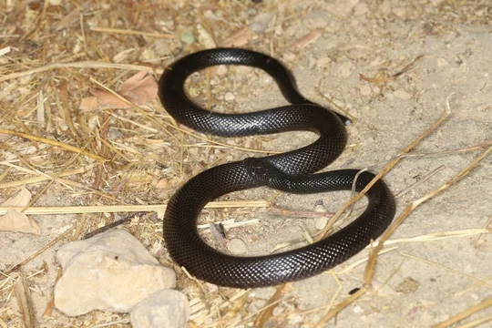
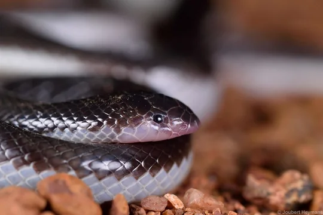
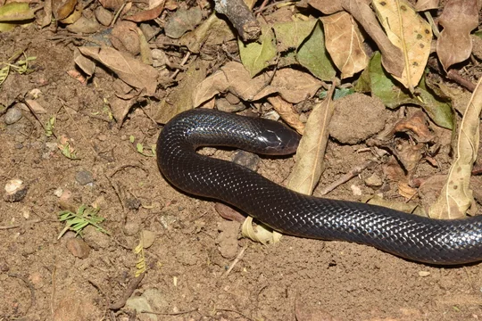
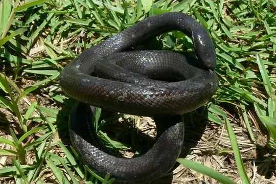
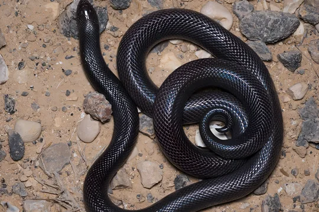
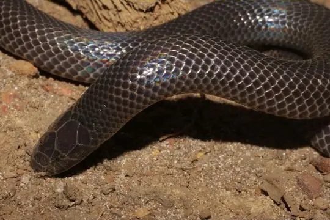
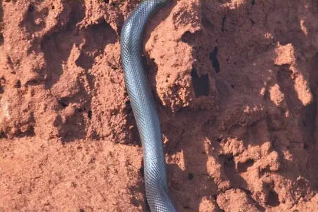
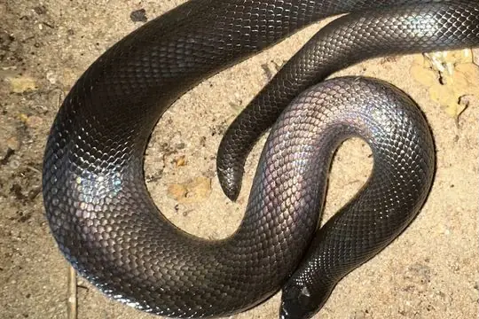

Atractaspis
The genus Atractaspis (family Atractaspididae) has 22 living species in SnakeList (all venomous), recorded in 47 countries.
- 22living species
- 22venomous
- 47countries
About the genus
A genus of the family Atractaspididae (burrowing asps, stiletto snakes and relatives).
Species
Showing 22 species

Arabian Small-Scaled Burrowing AspAtractaspis andersonii- No photo yetBattersby's Mole ViperAtractaspis battersbyi

Beaked Burrowing AspAtractaspis duerdeni
Bibron's Burrowing AspAtractaspis bibronii
Boulenger's Mole ViperAtractaspis boulengeri- No photo yetBranch's Burrowing AspAtractaspis branchi
 Congo Burrowing AspAtractaspis congica
Congo Burrowing AspAtractaspis congica- No photo yetEngdahl's Mole ViperAtractaspis engdahli

Israeli Mole ViperAtractaspis engaddensis- No photo yetMagretti’s Burrowing AspAtractaspis magrettii
 Mole Viper (aterrima)Atractaspis aterrima
Mole Viper (aterrima)Atractaspis aterrima Mole Viper (corpulenta)Atractaspis corpulenta
Mole Viper (corpulenta)Atractaspis corpulenta- No photo yetMole Viper (dahomeyensis)Atractaspis dahomeyensis

Mole Viper (reticulata)Atractaspis reticulata- No photo yetOgaden Burrowing AspAtractaspis leucomelas

Peters' Burrowing AspAtractaspis fallax Phillips' Burrowing AspAtractaspis phillipsi
Phillips' Burrowing AspAtractaspis phillipsi- No photo yetSahelian Burrowing AspAtractaspis micropholis
- No photo yetSmall-Scaled Burrowing AspAtractaspis microlepidota
- No photo yetSomali Burrowing AspAtractaspis scorteccii
 Variable Burrowing AspAtractaspis irregularis
Variable Burrowing AspAtractaspis irregularis
Watson's Burrowing AspAtractaspis watsoni
No snakes in Atractaspis match.
About the genus Atractaspis
- Distribution: living species recorded in 47 countries, on 2 continents: Africa, Asia.
- Family: Atractaspididae.
- Countries and territories: Angola, Benin, Botswana, Burkina Faso, Cameroon, Central African Republic, Chad, Democratic Republic of the Congo, Egypt, Equatorial Guinea, Eritrea, Eswatini, Ethiopia, Gabon, Gambia, Ghana, Guinea, Guinea-Bissau, Israel, Ivory Coast, Jordan, Kenya, Lebanon, Liberia, Malawi, Mali, Mauritania, Mozambique, Namibia, Niger, Nigeria, Oman, Republic of the Congo, Rwanda, Saudi Arabia, Senegal, Sierra Leone, Somalia, South Africa, South Sudan and 7 more.
Compare its species
Its living species side by side. Lengths come only from SnakeList’s reviewed, sourced accounts; the others are left blank rather than guessed.
| Species | Venom | Recorded in | Adult length (reviewed accounts) |
|---|---|---|---|
| Arabian Small-Scaled Burrowing Asp Atractaspis andersonii | Venomous | 3 countries (Asia) | No reviewed account yet |
| Battersby's Mole Viper Atractaspis battersbyi | Venomous | 1 country (Africa) | No reviewed account yet |
| Beaked Burrowing Asp Atractaspis duerdeni | Venomous | 3 countries (Africa) | No reviewed account yet |
| Bibron's Burrowing Asp Atractaspis bibronii | Venomous | 13 countries (Africa) | No reviewed account yet |
| Boulenger's Mole Viper Atractaspis boulengeri | Venomous | 6 countries (Africa) | No reviewed account yet |
| Branch's Burrowing Asp Atractaspis branchi | Venomous | 1 country (Africa) | No reviewed account yet |
| Congo Burrowing Asp Atractaspis congica | Venomous | 7 countries (Africa) | No reviewed account yet |
| Engdahl's Mole Viper Atractaspis engdahli | Venomous | 2 countries (Africa) | No reviewed account yet |
| Israeli Mole Viper Atractaspis engaddensis | Venomous | 5 countries (Africa, Asia) | No reviewed account yet |
| Magretti’s Burrowing Asp Atractaspis magrettii | Venomous | 2 countries (Africa) | No reviewed account yet |
| Mole Viper (aterrima) Atractaspis aterrima | Venomous | 19 countries (Africa) | No reviewed account yet |
| Mole Viper (corpulenta) Atractaspis corpulenta | Venomous | 12 countries (Africa) | No reviewed account yet |
| Mole Viper (dahomeyensis) Atractaspis dahomeyensis | Venomous | 11 countries (Africa) | No reviewed account yet |
| Mole Viper (reticulata) Atractaspis reticulata | Venomous | 5 countries (Africa) | No reviewed account yet |
| Ogaden Burrowing Asp Atractaspis leucomelas | Venomous | 2 countries (Africa) | No reviewed account yet |
| Peters' Burrowing Asp Atractaspis fallax | Venomous | 5 countries (Africa) | No reviewed account yet |
| Phillips' Burrowing Asp Atractaspis phillipsi | Venomous | 2 countries (Africa) | No reviewed account yet |
| Sahelian Burrowing Asp Atractaspis micropholis | Venomous | 8 countries (Africa) | No reviewed account yet |
| Small-Scaled Burrowing Asp Atractaspis microlepidota | Venomous | 10 countries (Africa) | No reviewed account yet |
| Somali Burrowing Asp Atractaspis scorteccii | Venomous | 2 countries (Africa) | No reviewed account yet |
| Variable Burrowing Asp Atractaspis irregularis | Venomous | 18 countries (Africa) | No reviewed account yet |
| Watson's Burrowing Asp Atractaspis watsoni | Venomous | 12 countries (Africa) | No reviewed account yet |